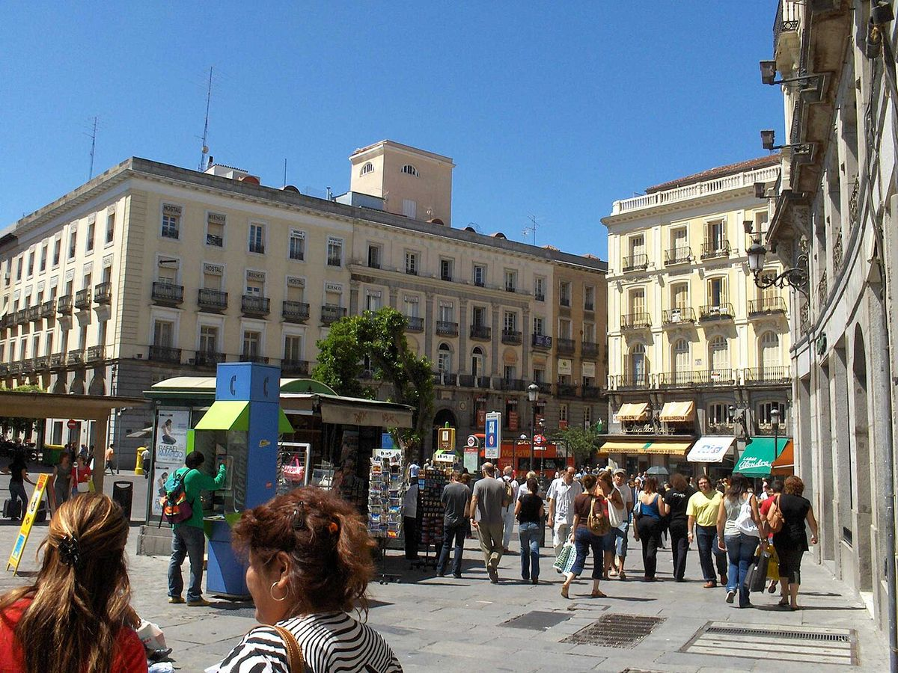

Bisagras · Elecciones: 23 de julio de 2023
El escaño de Madrid que decidió el extranjero
El último escaño de Madrid en 2023 lo decidió el voto desde el extranjero
Por Nacho G. del Álamo ·
Con los votos emitidos en España, el último escaño de Madrid era del PSOE: al PP le faltaban 1.915 votos. El voto de los residentes en el extranjero (CERA) dio al PP 19.006 votos y al PSOE 10.411, y el escaño pasó al PP: 16 para el PP y 10 para el PSOE. Con todos los votos contados, al PSOE le faltaron 1.340.
Dato: verificable y reproducible
La pregunta: ¿Cuántos votos separaron el último escaño de Madrid el 23J?
El recuento de la noche y el definitivo
DatoLa noche electoral no se cuentan todos los votos. Los de los españoles que viven en el extranjero y están inscritos en el Censo Electoral de Residentes Ausentes (CERA) se suman días después, en el escrutinio general. Casi siempre no cambian nada. En Madrid, en 2023, cambiaron un diputado.
DatoCon los votos emitidos en España, Madrid repartía sus 37 escaños así: PP 15, PSOE 11, Sumar 6 y Vox 5. El último escaño era del PSOE, y al PP le faltaban 1.915 votos para arrebatárselo.
Lo que llegó desde fuera
DatoEl voto exterior de Madrid sumó 43.964 votos a candidaturas. El PP recibió 19.006, casi el doble que el PSOE, que recibió 10.411. Esa ventaja de 8.595 votos era más que suficiente para cubrir los 1.915 que le faltaban al PP.
DatoCon todos los votos contados, el reparto final fue PP 16, PSOE 10, Sumar 6 y Vox 5. En el conjunto de España, ese escaño dejó al PP con 137 diputados y al PSOE con 121.
Uno de los márgenes más estrechos del 23J
DatoDespués del escrutinio, la distancia se dio la vuelta: al PSOE le faltaron 1.340 votos para recuperar el escaño. Es el cuarto margen más estrecho de las 52 circunscripciones, en la provincia donde el PP sumó 1.463.183 votos.
DatoEse escaño tiene una segunda vida. Para el 29N, Madrid elige 38 diputados en vez de 37, y si se repitieran los votos de 2023, el escaño nuevo sería precisamente el que el PSOE rozó.
Sobre el terreno
DatoEn octubre de 2022 una reforma de la ley electoral suprimió el «voto rogado»: desde entonces, los españoles inscritos como residentes en el extranjero ya no tienen que solicitar el voto para poder votar en unas generales. Fuentes: 1, 2
Lo que no sabemos
- HipótesisPor qué el voto exterior madrileño fue más favorable al PP que el voto emitido en España. Requiere datos del perfil de los residentes en el extranjero que esta pieza no tiene.
Dato: verificable y reproducible. Patrón: relación descriptiva, sin causa. Hipótesis: explicación posible que aún no tiene dos fuentes independientes.
Los datos
| Partido | Sin CERA | Con CERA | Votos CERA |
|---|---|---|---|
| PP | 15 | 16 | 19.006 |
| PSOE | 11 | 10 | 10.411 |
| Sumar | 6 | 6 | — |
| Vox | 5 | 5 | — |
Preguntas
¿Qué es el voto CERA?
El de los españoles inscritos en el Censo Electoral de Residentes Ausentes, es decir, que viven en el extranjero. Se cuenta días después de la jornada electoral.
Método y fuentes
- Qué se compara
- El reparto D'Hondt de los 37 escaños de Madrid con y sin los votos emitidos desde el extranjero.
- Límites
- Datos del escrutinio por mesa de Interior. «Votos que faltaban» es el mínimo de votos adicionales con el que una lista habría superado el último cociente, sin restar votos a nadie.
- Metodología completa
- Cómo se calculan los porcentajes, el modelo, los gemelos y los escaños
- Fuentes
- Autoría
- Nacho G. del Álamo
- Revisión de datos y texto
- Nacho G. del Álamo, 6 de octubre de 2026
- Publicado · actualizado
- 6 de octubre de 2026 · 7 de octubre de 2026
- Correcciones
- Ninguna. Historial del Atlas